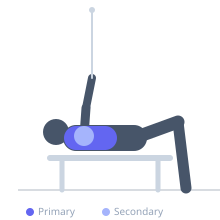

Exercise guide / Low-to-High Cable Fly
Low-to-High Cable Fly
The low-to-high cable fly is performed with the cable pulleys set at the lowest position. The upward arc of the movement targets the clavicular (upper) portion of the pectoralis major, which is mechanically activated when the arm moves in an upward adduction pattern. This makes it complementary to flat and high-to-low fly variations for complete pectoral development.
Primary muscles
pectoralis major clavicular
Secondary muscles
pectoralis major sternal
deltoid anterior
Stabilizers
supraspinatus
brachialis
Equipment
Cable Machine (Dual Pulley / Functional Trainer)
Optional
Cable Machine (Low Pulley)


Starting position
- Set both cable pulleys to the lowest position. Grasp the handles, stand between the stacks, and step forward. Begin with hands at approximately hip height, arms wide with a slight bend at the elbow.
Setup
- Set cable pulleys to floor level. Use single-handle attachments. Select a weight that allows smooth control through the full upward arc.
Steps
- Step 1: Position pulleys at the lowest setting and grasp handles. Step forward and stagger the stance.
- Step 2: Start with hands at hip level, arms extended down and to the sides with elbows slightly bent.
- Step 3: Exhale and arc both arms upward and inward in a scooping motion, meeting the hands at approximately chest to eye level.
- Step 4: Squeeze the upper chest at the top, then inhale and slowly lower the hands back to hip level.
Coaching cues
- Scoop from low to high as if lifting a large ball from your sides to above your head
- Feel the upper chest squeeze at the top of the movement
Breathing
- Exhale as you arc the cables upward and in; inhale as you return to the low position.
Range of motion
- Full arc from hip height up to eye level, feeling a stretch at the bottom and a contraction at the top.
Tempo
- 2-1-2-0
Common mistakes
- Letting the elbows bend excessively, turning this into a curl
- Allowing torso rotation instead of moving only at the shoulder joint
Safety
- Keep a consistent, slight elbow bend — do not lock out the arms
- Control the eccentric to avoid jerking the shoulder at the bottom
Training
- hypertrophy: 10–20 reps
- endurance: 15–25 reps
- hypertrophy: 3–4 sets
- endurance: 2–3 sets
- Rest: {'hypertrophy': 60, 'endurance': 45}